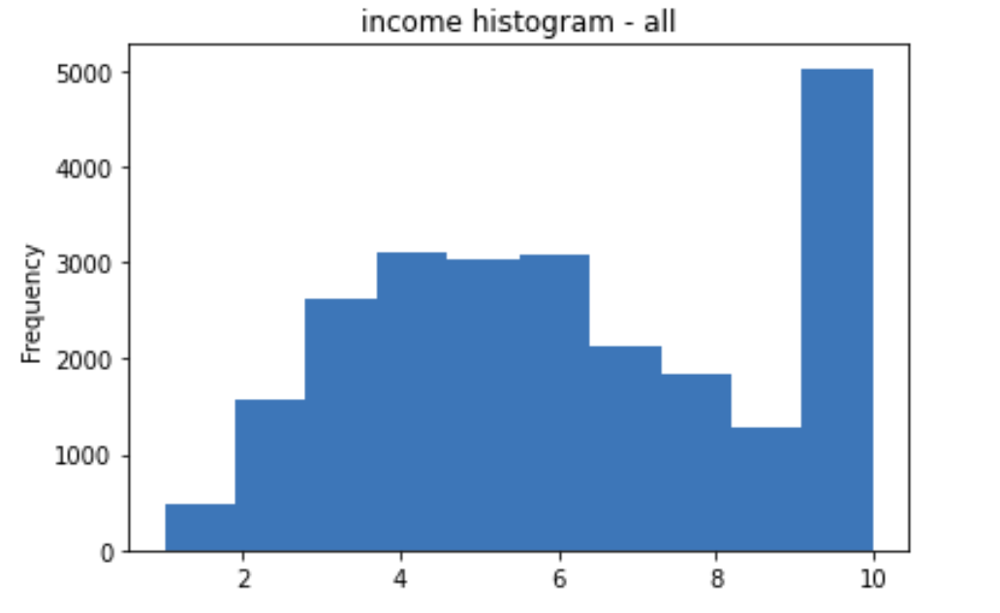

Applying Advanced Healthcare Analytics Techniques to Dog Healthcare
Disease Trajectory Analysis: Cancer
August 22, 2022 - Ann Arbor, Michigan

It is widely recognized in the veterinary world that dogs provide a unique model for health research that parallels the human environment. Dogs are exposed to similar social and environmental elements as humans, exhibiting increases in many chronic conditions with dynamics similar to human patterns¹. Dogs also have shorter life spans, which allows researchers to observe their entire life course in a much more condensed time frame². Use of machine learning in human healthcare has advanced rapidly in recent years, paving the way for new and deeper insights into how data can be used to improve human healthcare. Due to the similarities between human and dog healthcare, we seek to bring these analytical innovations to dog healthcare, with the hopes of finding deeper insights that can help both canine and human care. This analysis begins a number of traditional machine learning analysis techniques applied to the dataset. It will conclude with the application of two cutting edge techniques that have emerged in human healthcare, but applied to this dog healthcare set as a way to determine how new techniques in a similar field can help this field advance. And last, we should consider the ethical implications of the data obtained from all of these owners and dogs, particularly when it comes to privacy.
Dataset Challenges
To fully understand this analysis, we need to first understand the challenges we face with the Dog Age Project (DAP) dataset. Challenges we identified include self-selection bias, an imbalance of the minority class versus the majority class in much of the binary classification related analysis we performed, and the relatively small size of the dataset. In addition, from a data science perspective, healthcare related data tends to have a set of common challenges that we also saw in our own dataset.
Self Selection BiasThe respondents that the DAP data were collected from were self-nominated, and are a nonrandom sample of American dogs and their owners. Participants filled out hundreds of survey questions relating to their companion dog, indicating that they were likely a particularly dedicated set of dog owners with the time and capacity to fill out these surveys, and not fully representative of the overall dog-owning population. During our exploratory data analysis, we quickly identified that the survey participants tended to be more affluent and well-educated than average, and minority populations are currently underrepresented.

This selection bias has likely resulted in a sample of individuals that is not representative of the overall dog
owner population in the United States. Ideally, we have a sample of data that is basically a mini version of
the overall dog owner population, but in our case, our sample is more representative of the more passionate,
affluent, and educated dog owner population. While there is still value in the analysis that could be
conducted on this particular part of the population, it does need to be taken into account that any of
these results cannot be directly applied or generalized to the general population of dog owners.
In limited comparisons to a nationwide survey data from 2016 that was published in the American Veterinary Medicine Association (AVMA) Pet Ownership & Demographics Sourcebook³, the dogs from the DAP survey and the AVMA survey have the same proportion of dogs that are mixed breed (51%) vs. purebred (49%), but the DAP survey participants have a much lower proportion of dogs that come from households with less than a $20,000 annual income (2% vs. 13%).
Imbalanced Minority Class
As with most medical related datasets, the number of dogs that do not have cancer far outnumber the number that do,
causing our dataset to be heavily imbalanced for this particular type of analysis. As part of our analysis, we set
up “dummy” classifiers, including the “most frequent” classifier that basically just gives the most frequent data
class as the prediction 100% of the time. For imbalanced datasets, where the majority class is the vast majority
of all of the data points, this classifier will show a high accuracy simply by predicting that majority class.
Obviously, this high accuracy is misleading and does not mean we have an effective model, but it does show the
imbalance in the data.
Accuracy: 93.7% precision: 0% recall: 0% f1 score: 90.7%
However, as we will discuss, we were able to offset this using SMOTE to synthesize new minority class data
and balance the classes. This is the same most frequent dummy classifier with the balanced dataset:
Accuracy: 49.9% precision: 0% recall: 0% f1 score: 33.2%
We will show how this impacted the results of the analysis.
Dataset SizeThis dataset is relatively large in the dog data world, with 27,541 dogs represented, 1,751 of which have associated cancer records. It is on the smaller size for common datasets within the areas of human healthcare and cancer. For example, the National Cancer Institute provides a number of key datasets ranging in size from 1,000 to 44,000 patients (https://datacommons.cancer.gov/data#key-datasets. And compared to datasets that are used in general with many of the machine learning approaches we used, particularly the neural networks, this is a relatively small dataset.
Healthcare Data Related ChallengesBecause we were dealing with a disease that appears over time, typically during a diagnosis at a veterinarian visit, we structured the data in a time based way, taking the medical records for each dog, adding the cancer diagnosis (when there was one), and essentially ending up with a time series based dataset. However, we still maintained the “static” or non-time based data about the dog as well, such as the gender, whether it was neutered or not, and other similar static data points. Having data structured in this way presents a number of challenges for our analysis that is common in the medical field, as well as any other field with varying numbers of time series over varying dates mixed with static data. These relatively unique challenges include:
- You are working with multiple streams of measurement that are often sparse and irregularly (and informatively) sampled.
- It is often necessary to forecast multiple outcomes rather than a single outcome, and these outcomes themselves may change over time since dog participants with one chronic disease typically develop other long-term conditions.
- True clinical states tend to be inherently unobservable, as the timing of the diagnosis may not reliably indicate the timing of the onset of the disease.
- Much like humans, it is important to factor in the heterogeneity of the dog participants, which may lead to many possible patterns that can be forecasted and complicate the prediction models.
As with any datasets collected from individuals, there are numerous ethical considerations, particularly when it pertains to privacy. In the human healthcare industry, in most countries are the world, data privacy is even protected by laws with serious repercussions if the data is shared in improper ways as defined by those laws. However, dog healthcare data does not share the same protective laws, and so in theory, there is no legal barrier to sharing this data in a much broader way than you could legally with human healthcare data. The Dog Aging Project however has taken a similar approach to this data as is typically taken in the healthcare industry, through the anonymization of the data and removing any other telling fields, like the name of the dogs and specific addresses.
Dataset
The DAP dataset provides data from the baseline survey of owners of 27,541 living companion dogs that were enrolled in the DAP as of December 21, 2020. There are 77,576 temporal-based healthcare records, or just under 3 records per dog, as well as an additional 1,751 cancer diagnosis records. Survey questions covered the history of the cancer or tumors, including organ sites and histologic type. We combined multiple data tables in this dataset so that we have the sequence of healthcare visits for each dog, removing any dog with less than 4 sequence entries. This reduced our dataset to 40,712 time-based records, with each row containing both static and temporal data. In addition, we set up the data in a “forward” looking way, so that we can predict future occurrences of cancer based on the current health status of the dog. This will be discussed further in future sections. The dataset contains several hundred datapoints about both the dog and the dog's owner, but omits any personally identifiable information. The DAP dataset is stored on the Google Cloud Platform, and can be accessed through the Terra workspace at the Broad Institute of MIT and Harvard.
Current State of Human Healthcare Machine Learning
As mentioned, machine learning usage in human healthcare has advanced rapidly in recent years, paving the way for new and deeper insights into how data can be used to improve human healthcare. The primary goal of this portion of this project is to take one of the machine learning innovations in human healthcare and attempt to apply it to dog healthcare data, with the hopes of finding deeper insights that can help both canine and human care. One area of healthcare that has rapidly advanced in recent years is using disease data to forecast disease trajectories, which is often used with cancer research. Since cancer is also a common disease among canines, being the leading cause of canine morbidity and mortality⁴,⁵, and our dataset has cancer-specific data collected, we focused on one of the latest approaches to forecasting disease trajectories, the Attentive State Space Model (ASSM), and applied it to our dog cancer/health dataset. The ASSM is a relatively robust approach to forecasting, applying a memoryful state transition that depends on the patient's entire clinical history, can handle both static and temporal data, and is interpretable and directly usable by the clinician in a medical setting. The deep learning component is based on recurrent neural networks (RNNs) that are meant to capture more complex state dynamics, and provide the memoryful state mentioned above. This allows the model to learn hidden disease states from observational data in an unsupervised fashion. In addition, because our dataset suffers from imbalance, we used an advanced synthetic data generator that can generate complex datasets with both static and temporal data points, as well as data that “progresses” with interdependencies across the different points of time. It uses both supervised and unsupervised training methods that compete in an adversarial fashion to produce the new synthetic data points. This model, called TimeGANs, is another advancement in the field of healthcare that we can utilize when applying our models to dog health data.
Forecasting disease trajectoriesChronic diseases such as cancer and endocrine diseases (which includes thyroid and diabetes) progress slowly throughout a dog participant's lifetime. This progression demonstrates “stages” that are typically shown through veterinary visits and diagnosis. One area in human healthcare that is growing rapidly is precision medicine, which focuses on the forecasting of personalized disease trajectories by observing the patterns found in the temporal relationships between related diseases. The goal here is to build a similar disease progression model for dogs from their healthcare records, to be able to provide personalized dynamic forecasts for each dog participant. In addition, this will enable us to identify new insights regarding dog disease progression mechanisms at the population level, at various sub-group levels like breeds, and at a personalized level.
This kind of forecasting in a time series scenario introduces a number of challenges. Healthcare data typically contains a large number of streams of measurement that tend to be sparse and irregularly sampled. You typically have to forecast multiple outcomes, rather than just one, and those outcomes may even change over time as a dog participant with one chronic disease is likely to develop other long-term complications. A key challenge in this environment is that the timing of the diagnosis is often not a reliable indication of the timing of the disease onset. And similar to humans, dogs exhibit a wide heterogeneity of physiologies and characteristics that can lead to a breadth of patterns that need to be identified.
We will look at three different approaches to this problem. First, we will apply the wide variety of traditional binary classification machine learning models to simply predict if a dog has cancer based on their current conditions. Second, we will use what is considered the most current approach (in human healthcare) for making disease trajectory forecasts, a Markovina state-space model. Almost all current models for disease progression are based on variations of the hidden markov model (HMM). Here are some example models currently in use in the field:
- C. H. Jackson, L. D. Sharples, S. G. Thompson, S. W. Duffy, and E. Couto. Multistate markov models for disease progression with classification error. Journal of the Royal Statistical Society: Series D (The Statistician), 52(2):193-209, 2003. http://www.leg.ufpr.br/~silvia/papers/mmm.pdf
- Xiang Wang, David Sontag, and Fei Wang. Unsupervised learning of disease progression models. In Proceedings of the 20th ACM SIGKDD international conference on Knowledge discovery and data mining, pages 85-94. ACM, 2014. https://people.csail.mit.edu/dsontag/papers/WanSonWan_kdd14.pdf
- Ahmed M Alaa, Scott Hu, and Mihaela van der Schaar. Learning from clinical judgments: Semi-markov-modulated marked hawkes processes for risk prognosis. International Conference on Machine Learning, 2017. http://proceedings.mlr.press/v70/alaa17a/alaa17a.pdf
The models provide an easily interpretable disease dynamic that can be summarized through a single matrix of probabilities describing transition rates about the disease states. These models do provide the patient with useful predictions of risk for the progression of their disease, but they struggle to provide a clinician with an interpretable representation of disease pathology. These models also simplify inference because they factorize in a way that makes efficient passing of messages backward and forward. Unfortunately, memoryless Markov models assume that the patient's current state separates the future trajectory from their clinical history, making these models incapable of properly explaining the heterogeneity in the patients' progression trajectories. This is a crucial part of explaining complex chronic disease progressions that have multiple diseases.
In order to address these many challenges, our third and final approach will be to work with one of the newer approaches to forecasting disease trajectories, called Attentive State-Space Models, based on this paper:
- Ahmed M Alaa and Mihaela van der Schaar. Attentive State-Space Modeling of Disease Progression. 33rd Conference on Neural Information Information Processing Systems, 2019. https://papers.nips.cc/paper/2019/file/1d0932d7f57ce74d9d9931a2c6db8a06-Paper.pdf
This model addresses the memoryless states by providing a memoryful state transition that depends on the patient's entire clinical history. According to the paper for this model, this is “the first deep probabilistic model that provides clinically meaningful latent representations, with non-Markovian state dynamics that can be made arbitrarily complex while remaining interpretable.” This key distinction is intended to provide clinicians with a model that is interpretable and delivers on the predictive power of deep learning models. The deep learning component is based on recurrent neural networks (RNNs) that are meant to capture more complex state dynamics, and provide the memoryful state mentioned above. This allows the model to learn hidden disease states from observational data in an unsupervised fashion.
Approach #1 - Predicting Cancer Using Traditional Machine Learning Algorithms
We took two approaches to how we set up the dataset prior to running it through our machine learning-based analysis:
- “General” Approach - where we take each record of data, and predict at that point in time, does the dog have cancer.
- “Forward-Step” Approach - where we predict if the dog will have cancer in the next time period. This approach is more similar to the final ASSM approach, which is predicting disease trajectory based on previous temporal steps.
It should be noted that this first approach, using “traditional” machine learning algorithms, is not intended to be directly comparable to the ASSM model. The ASSM model predicts the next state based on all previous states. It can tell us how important each of the previous states is in predicting the next state. This is much different than applying a binary classifier, like we will in the first approach, and simply predicting if cancer exists or not. The binary classifiers will still provide valuable insight into understanding this data and what factors play into dogs developing cancer, but we will not be able to compare these initial models directly to the HMM or ASSM models, like we are comparing them to each other with metrics like recall and the precision-recall-curve area-under-the-curve (PRC-AUC) score.
For each of the data approaches, we used classification models to do binary classification. We started the analysis with a broad search across 13 different types of models for a baseline comparison of model performance with this data, including:
- Logistic Regression
- Ridge Regression
- Stochastic Gradient Descent (SGD)
- Support Vector Classifier (SVC) - RBF Kernel
- Support Vector Classifier (SVC) - Linear Kernel
- K-Nearest Neighbors
- Decision Tree
- Random Forest
- Gaussian Naive-Bayes
- Bernoulli Naive-Bayes
- Gradient Boost
- XGBoost
- Multi-layer Perceptron Neural Network
It is important to note at this point what our key metrics were to determine the success of these models. Given that we are focused on cancer, it is clearly important to minimize missing a prediction of cancer when the dog actually has it. This is called a FALSE-NEGATIVE (FN). We ultimately decided that Recall gave us the best chance of reducing FNs. Often, this meant more FALSE-POSITIVEs (FPs), where we are saying the dog has cancer, but it does not. But after careful consideration, we decided this was the best trade off in this particular case. We will talk more about this later, when we also considered the Precision-Recall-Curve Area-Under-the-Curve (PRC AUC), but still came back to Recall as our primary metric. So while we will look at other metrics with these charts, we will ulimately select models that give us the best recall.
The following chart summarizes the initial results with no data synthesizing, and just a general approach to predictions from
the data (just a direct prediction on if the dog has cancer at the present data point time):

As you can see, Decision Trees are performing the best with a recall score of 0.5638, and Random Forest Not too far behind
with 0.5556. But in general these are fairly low scores. What happens when we use SMOTE to balance the data through synthesizing
the minority class (dogs with cancer)?
We have increased the recall score to 0.8025 for Ridge Regression, 0.7963 with Linear Kernel based SVC, and 0.7922 with logistic regression. Furthermore, we see significant improvements in the recall score across all of the models. For example, the Gradient Boost Classifier jumped from 0.0041 to 0.6687.
Unfortunately, we see a significant drop off in recall when we use the "forward step" approach to the data. Here are those
results for comparison, with Ridge Regression and Linear Kernel SVC also performing the best in these cases:
Interestingly enough, the results were almost identical, other than the time to fit the model.
Ultimately, the best predictive performance among these models came from the "general" data pattern version, but with using SMOTE to synthesize and balance the minority class with the majority class. Given these results, we move forward to round two where we will apply grid searches to several of the better performing models to see how much more we can optimize their hyperparameters. NOTE: The MLP Neural Network was not included in this round, as it was planned to run the more thorough hyperparameter tuning in the next round on this model anyway.
Second Round of Analysis - Narrowed Focus - Hyperparameter Tuning (Round 2)This round of analysis focused on applying a Halving Grid Search to these models:
- Random Forest
- Decision Tree
- XGBoost
- KNN
- Ridge Regression
- SVC
- MLP NNet
This chart indicates the results of the models after several thousand combinations of hyperparameters per model, run
on the "general" data, and optimized for PRC-AUC:
This chart indicates the results of the models after several thousand combinations of hyperparameters per model, run
on the "forward step" data, and optimized for PRC-AUC:
This chart indicates the results of the models after several thousand combinations of hyperparameters per model, run
on the "general" data, and optimized for the recall score:
This chart indicates the results of the models after several thousand combinations of hyperparameters per model, run
on the "forward step" data, and optimized for the recall score:
As you can see, XGBoost and KNN performed the best overall, depending on which approach you are looking at. For the "general" data approach, which, again, is where the models were simply predicting if cancer was present in the dog given the current health data, XGBoost performed the best when optimized for either recall or PRC-AUC. For the "forward step" data, where we were looking specifically at the steps just before a dog was diagnosed with cancer to see if we can predict cancer, the KNN model performed the best when optimized for either metric.
As mentioned earlier, it is critical to keep the number of FN low. But in these cases, the number of FPs (FP) that result as a trade-off can become too significant to ignore. For example, if we focus solely on the recall score, reducing FN as much as possible, we get a relatively low 90 FNs and relatively impressive 81.5% recall score from XGBoost, compared to 157 FPs and a 67.7% recall score for Ridge Regression as the next closest performance. This is significant, a 74% increase in FNs, but XGBoost also resulted in 3852 FPs, compared to the other models that ranged from 40 to 362 for the top 3 performers for FPs. It seems the model has fitted itself in a way that significantly overestimates the FPs which intuitively seems like a poor solution in general. Interestingly enough, the XGBoost that was optimized for PRC-AUC, still kept the FNs relatively low at 195, but had the lowest FALSE positive of 200 among the entire group. Within the group that was optimized for the recall score, the Random Forest , with 197 FNs and 205 FPs, performed very similar to the XGBoost (with 195 FNs and 200 FPs) that was optimized for PRC-AUC. Random Forest models are considered to be more interpretable than XGBoost, but this is changing as new approaches, like LIME, are emerging to make models like XGBoost more interpretable. For this reason, we suggest to continue to monitor the performance of both types of models as new data is added to the dataset. In general though, with the Random Forest recall score of 59.5% and XGBoost recall score of 59.3%, the scores in general were not very high.
The "forward step" data prediction results, which had significantly less data to work with, performed even worse than the "general" data approach. In this case, you see many of the models struggling to even provide TRUE-POSITIVE(TP) predictions, suggesting fitting issues. And those models that were able to predict more TPs, like the KNN, had significantly more FPs than the best performing models in the FP category. Ultimately though, if one were to select a model, it would likely be the KNN model, given its relatively high 61.4% recall score and relatively low FNs. In general though, given the poor performance of this model combined with the lack of data for this approach, we will likely see significantly better results as more dog data comes in, which we will talk about in the summary.
Final Models with Validation DataWe did hold out an extra final validation dataset to ensure our final models performed as expected in the “real” world. We ran Random Forest, XGBoost, & KNN with the validation data for one final check and to make sure our models can generalize their predictions to new data.

As you can see here, the validation results are very similar to the test results for both the general and forward step data approaches. And below you see the confusion matrices are very similar as well, with the general data approach on the left, and the forward step data approach on the right. We are most concerned with the recall score, which was 59.5% (test) vs 59.4% (validation) for the general data approach, and reducing FNs, which was 200 (test) vs 204 (validation), a slight improvement over the test results. For the forward step data approach, the recall score score was 21.1% (test) vs 22.0% (validation) and FNs were 45 (test) vs 46 (validation), also a slight improvement over the test results.
For XGBoost, we are seeing a different result:
For XGBoost, we see the Recall score for the general data approach drop from 81.5% (test) to 64.4% (validation), with FNs dropping from 187 (test) to 179 (validation). For the forward step approach, we see the recall score increase from 56.1% (test) to 67.8% (validation), and the FNs drop from 25 (test) to 19 (validation). The model is not generalizable to the new dataset.
For KNNs, we are also seeing some slight differences:
With KNNs, the recall score for the general data approach drops from 63% (test) to 59.4% (validation), and the FNs drop from 187 (test) 179 (validation). For the forward step data approach, we see recall improve from 61.4% (test) to 67.8% (validation), and the FNs drop from 25 (test) to 19 (validation). This is not a large difference, and may just be attributable to the new data differences.
Interpretability of the Random Forest and XGBoost Models
Given that we have models that are tree-based, we have the opportunity to gain some insights into what features in the data have the most predictive power. Let's take a look at the Random Forest model to see how it is viewing the data features:
The feature_importances in the Random Forest model are the features that are more closely related with the dependent variable and contribute more for variation of that dependent variable.
Three features stand out from the others with the most predictive power: age, main breed, and weight range. Things like eating feces, whether or not they are spayed/neutered, and their sleep hours at night seem to have little influence on if they are predicted to have cancer.
However, if you look at the influence chart for the XGBoost model, it focuses on insurance, urination in the home frequency, and fear of unknown human touch as the key predictive features.
If you look at feature importance based on the mean decrease in impurity, you can see the variability for these features:
As this chart indicates, those three features are still by far the largest influencers on predicting if the dog has cancer.
However, we have many unique values, and therefore a high cardinality. In this case, it is recommended to base the feature importance on feature permutation, which removes the bias towards high-cardinality features.
In this case, the same features are still detected as the most important, but the relative importance shifts from “main breed” to “weight range” as the second most important factor, and age is indicates as having significantly more predictive power.
Approach #2 - Hidden Markov Model
We will eventually show the ASSM model tuned to 4 “states” of cancer. As a more direct comparison to the ASSM model than the traditional models run in the 1st approach, we set up a Hidden Markov Model based on ones commonly used to analyze disease states in healthcare. The number of states is fed into the GaussianHMM as the number of components. We trained the HMM on the same data as the ASSM, and then tested with test and validation data. The training data is considered the observations X that the HMM model must find the hidden internal states Z. The hidden states are not observed directly. The model is trained on the observations, and then the predict method is tasked with finding the most likely state sequence corresponding to the testing “observations” fed to the model. The model can be “scored” (i.e. evaluated) with a log likelihood loss function. In our case, we obtained a loss of 7.2E+4, and the validation score was even higher at 5.6E+4. These loss functions are comparable to the ASSM model we will evaluate in a moment.
¹Hoffman CL, Ladha C, Wilcox S. An actigraphy-based comparison of shelter dog and owned dog activity patterns. J Vet Behav. 2019;34:30-36. doi:10.1016/j.jveb.2019.08.001
²Paynter AN, Dunbar MD, Creevy KE, Ruple A. Veterinary big data: when data goes to the dogs. Animals. 2021;11(7):1872. doi:10.3390/ani11071872
³Association AVM. AVMA Pet Ownership and Demographics Sourcebook. Schaumburg; 2018.Google Scholar
⁴Vail DM, Thamm DH, Liptak JM. Why worry about cancer in pets? In: DM Vail, D Thamm, J Liptak, eds. Withrow & MacEwen's Small Animal Clinical Oncology. 6th edn. St. ed. Saunders Elsevier; 2019.Google Scholar
⁵Urfer SR, Kaeberlein M, Promislow DEL, Creevy KE. Lifespan of companion dogs seen in three independent primary care veterinary clinics in the United States. Canine Med Genet. 2020; 7(1): 7.Google Scholar